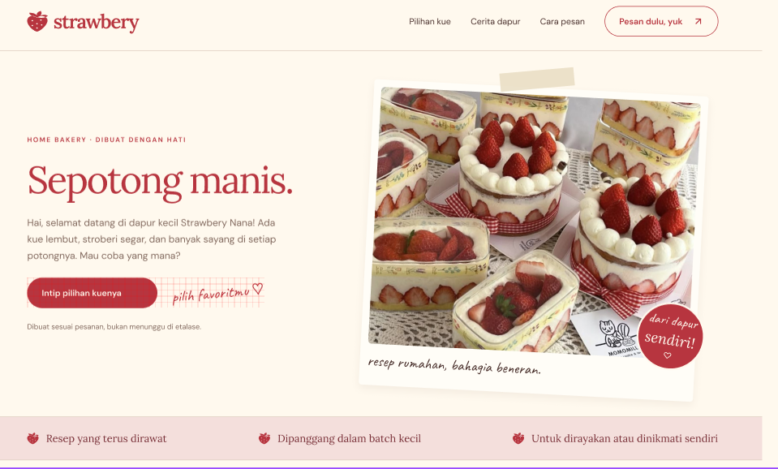
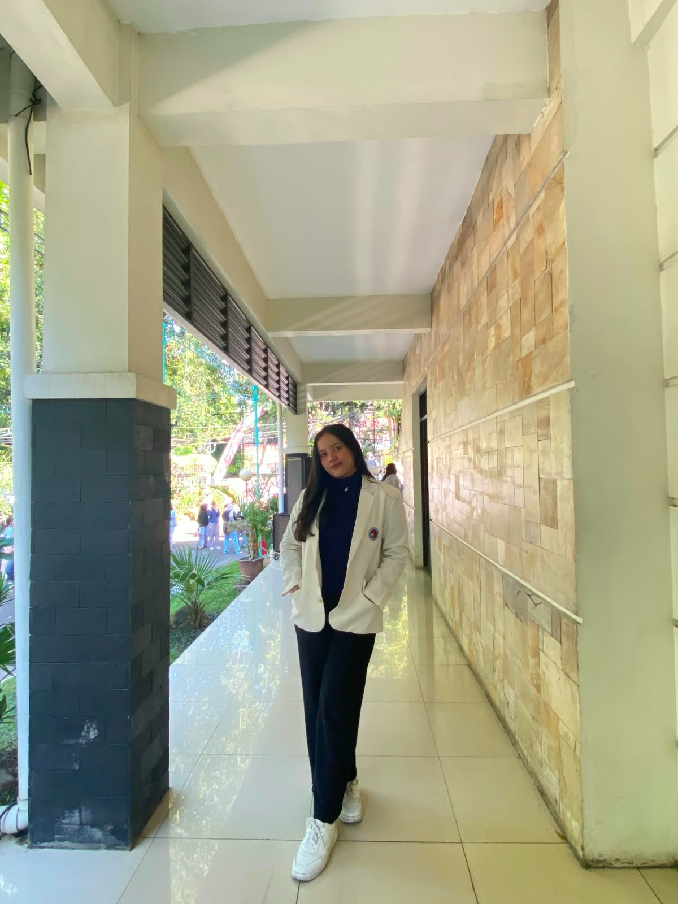
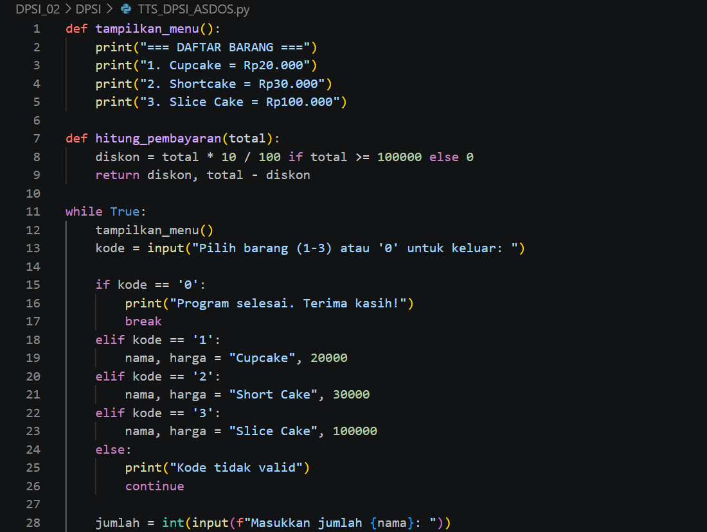

Figma
Desain UI/UX aplikasi di Figma. Aku mengerjakan riset pengguna dan rancangan layar utamanya.
Lihat detailHaii, salam kenal! 👋
Calon web developer|
Mahasiswa Teknologi Informasi yang suka bikin tampilan web rapi, lucu, dan gampang dipakai. Masih belajar, tapi udah punya beberapa karya yang bisa kamu intip!

Aku Karen Romay Nathania Saputra, mahasiswa Sistem Informasi di Universitas Kristen Satya Wacana, angkatan 2026. Awalnya aku masuk IT karena penasaran bagaimana sebuah aplikasi bisa dibuat dari nol.
Sekarang fokusku di web development dan desain antarmuka. Di praktikum PTI aku belajar HTML, CSS, Bootstrap, dan JavaScript, lalu merancang tampilannya dulu di Figma sebelum ditulis jadi kode.
Tujuanku: dapat magang di bidang web atau UI/UX dan terus membangun portofolio yang jujur dari karya sendiri.
Makin besar chip-nya, makin sering aku pakai. Coba senggol-senggol deh!
Pink besar: paling sering dipakai. Kuning: sedang kuat-kuatkan. Hijau putus-putus: soft skill.
Tiga proyek favoritku selama belajar sejauh ini.

Desain UI/UX aplikasi di Figma. Aku mengerjakan riset pengguna dan rancangan layar utamanya.
Lihat detail
Tugas praktikum membuat kalkulator sederhana. Fokusnya pada struktur coding yang rapih.
Buka demoPeran Artificial Intelligence dan Cyber Security untuk tugas kuliah.
Baca dokumentasiTempat aku nempel hal-hal yang lagi kepikiran. Pencet tombolnya buat ganti isi catatan!
Responsive layout dengan grid Bootstrap.
Playlist fokus ngoding favoritku.
Ikut satu lomba desain atau hackathon.
Mulai saja dulu, rapikan sambil jalan.